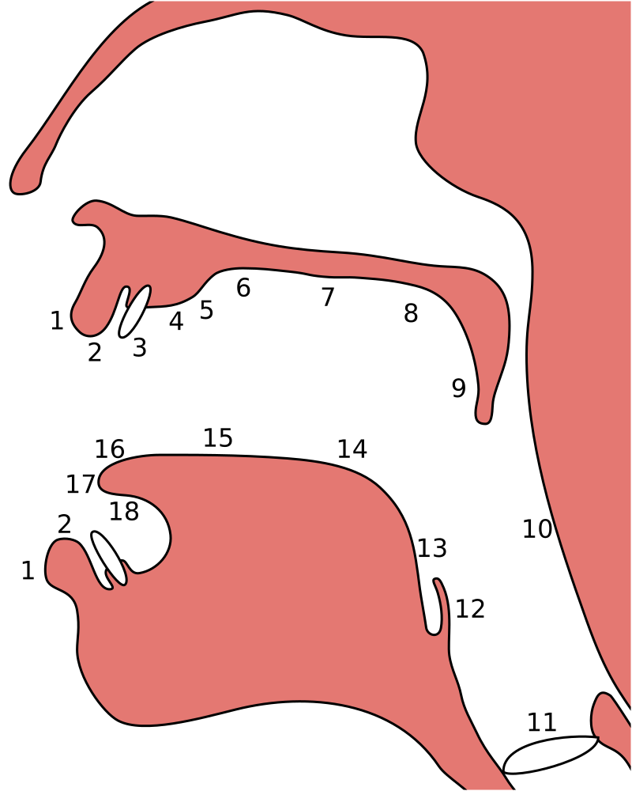

2. Guide de prononciation#
Nous allons nous intéresser ici à comment prononcer l’ensemble des sons réalisables en tunisien.
2.1. Principes généraux#
Avant d’attaquer directement la prononciation dans le cadre de l’apprentissage du tunisien, il est nécessaire de dresser quelques principes généraux afin de faciliter la lecture de ce guide.
2.1.1. Consonnes#
2.1.1.1. Consonne sourde et consonne sonore#
Il est possible de catégoriser chaque consonne en deux catégories : les consonnes sourdes et les consones sonores. Une consonne est dite sourde (ou non-voisée) si les cordes vocales ne sont pas sollicitées pour la prononcer ; à l’inverse, une consonne est dite sonore (ou voisée) si elles le sont.
On peut alors définir des pairs de consonnes dont la seule différence est le voisement :
Consonne sourde |
Consonne sonore |
|---|---|
[s] - sceau |
[z] - zoo |
[p] - poids |
[b] - bois |
[t] - toit |
[d] - doigt |
2.1.1.2. Point d’articulation#
Le point d’articulation désigne les zones de la cavité buccale où l’air est obstrué afin de pouvoir prononcer un son. Il est par exemple possible de produire des sons différents en ne changeant que la position de la langue dans la cavité buccale, et gardant toute autre chose similaire par ailleurs.
Il existe beaucoup de points d’articulation différents dans les langues du monde, qui sont réalisés lorsque deux zones se rapprochent où rentre en contact. On distingue des points d’articulation en fonction de la paire de zones impliquées, qui se décompose en lieu d’articulation (partie supérieure, l’endroit où l’air est obstrué) et l”organe articulatoire (partie inférieure, l’organe qui contraint l’air). La figure ci-dessous numérote l’ensemble des zones tel qu’on peut le retrouver en phonétique articulatoire.
{kind=link}
En tunisien, uniquement certains points d’articulation sont présents, Ne sont donc présentés ci-dessous que les points d’articulation qu’on y retrouve.
Point d’articulation |
Lieu d’articulation |
Organe articulatoire |
Exemple |
|---|---|---|---|
Bi-labial |
2 |
2 |
م /m/ |
Labio-dental |
3 |
2 |
ف /f/ |
Dental |
3 |
17 |
ث /þ/ |
Alvéolaire |
4 |
17 |
ت /t/ |
Post-alvéolaire |
5 |
17 |
ش /š/ |
Vélaire |
8 |
14 |
ك /k/ |
Uvulaire |
9 |
14 |
ق /q/ |
Pharyngal |
10 |
13 |
ع /a̧/ |
Glottal |
11 |
11 |
أ /”/ |
2.1.1.3. Mode d’articulation#
Le mode d’articulation désigne un ensemble de propriétés relative à l’articulation d’une consonne, notamment le type d’obstruction au passage de l’air ou le canal vocal utilisé.
A l’instar des points d’articulation, il existe beaucoup plus de modes d’articulation dans les langues du monde qu’en tunisien. Le tableau ci-dessous présente les modes que l’on retrouve dans ce dernier.
Mode d’articulation |
Description |
Exemple |
|---|---|---|
Consonne nasale |
Passage de l’air dans le canal nasal |
م /m/ |
Consonne occlusive |
Blocage complet de l’air avec accumulation de pression |
ت /t/ |
Consonne battue |
Blocage complet de l’air sans accumulation de pression |
ر /r/ |
Consonne fricative |
Resserrement des organes d’articulation sans blocage complet d’air avec bruit de friction |
س /s/ |
Consonne spirante |
Resserrement des organes d’articulation sans blocage complet d’air sans bruit de friction |
ي /y/ |
2.1.1.4. Consonne emphatique#
Certaines consonnes en tunisien sont dites emphatiques, ou encore pharyngalisées. Il s’agit d’une prononciation secondaire qui vient accompagner la réalisation d’une autre consonne. Ces consonnes-ci se retrouvent dans la plupart des langues sémitiques et quasiment exclusivement à celles-ci.
Cette articulation secondaire particulière peut-être réalisée en contractant le pharynx en prononçant la consonne (référez-vous au point d’articulation pharyngal vu plus haut).
En pratique, pour le son [s] emphatique, noté [sˤ], sa prononciation se rapproche beaucoup du ça du français canadien.
2.1.2. Voyelles#
2.1.2.1. Degré d’ouverture#
Le degré d’ouverture d’une voyelle, aussi appelé hauteur, décrit la position verticale de la langue lors de la réalisation de la voyelle.
L’alphabet phonétique international différencie sept degrés différents, mais seuls cinq d’entre eux sont présents en tunisien :
Voyelles fermées , comme dans fille;
Voyelles pré-fermées, comme dans six en français canadien ;
Voyelles moyennes, comme dans le ;
Voyelles mi-ouvertes, comme dans cèpe ;
Voyelles ouvertes, comme dans la.
2.1.2.2. Point d’articulation#
Le point d’articulation d’une voyelle décrit la position horizontale de la langue lors de la réalisation de la voyelle (vers l’avant ou l’arrière de la bouche).
L’alphabet phonétique international différencie cinq points différents, mais seuls quatre d’entre eux sont présents en tunisien :
Voyelles antérieures, comme dans beauté ;
Voyelles quasi-antérieures, comme dans six en français canadien ;
Voyelles centrales, comme dans le ;
Voyelles postérieures, comme dans réseau.
2.1.2.3. Rondeur#
La rondeur d’une voyelle décrit la forme plus ou moins arrondie que prennent les lèvres lors de la réalisation de la voyelle.
On ne distingue que deux rondeurs différentes :
Voyelles non-arrondies comme dans fille ;
Voyelles arrondies comme dans musique.
2.1.2.4. Nasalisation#
Certaines voyelles sont nasalisées, c’est-à-dire que leur réalisation est accompagnée du passage de l’air dans le canal nasal, via l’abaissement du velum (palais mou).
Ces voyelles nasales sont les mêmes que celles qu’on retrouve dans plusieurs mots français comme maison ou français.
2.2. Récapitulatif de l’inventaire phonétique#
Est présenté ici un récapitulatif des consonnes qui ont été présentées ici, rangés à la manière de l’inventaire phonétique international, par point et mode d’articulation.
De même avec les voyelles, rangées par point et degré d’ouverture.
Mode / Point |
Bi-labial |
Labio-dental |
Dental |
Alvéolaire |
Post-alvéolaire |
Vélaire |
Uvulaire |
Pharyngal |
Glottal |
|
|---|---|---|---|---|---|---|---|---|---|---|
Nasale
|
sourde |
|||||||||
sonore |
[m] |
[n] |
||||||||
emphatique |
||||||||||
Occlusive
|
sourde |
[p] |
[t] |
[k] |
[q] |
[ʔ] |
||||
sonore |
[b] |
[d] |
[g] |
|||||||
emphatique |
[tˤ] |
|||||||||
Battue
|
sourde |
|||||||||
sonore |
[ɾ] |
|||||||||
emphatique |
||||||||||
Fricative
|
sourde |
[f] |
[θ] |
[s] |
[ʃ] |
[χ] |
[ħ] |
|||
sonore |
[v] |
[ð] |
[z] |
[ʒ] |
[ʁ] |
[ʕ] |
[ɦ] |
|||
emphatique |
[ðˤ] |
[sˤ] |
||||||||
Spirante
|
sourde |
|||||||||
sonore |
[l] |
[j] |
[w] |
|||||||
emphatique |
||||||||||
Degré / Point |
Antérieure |
Quasi-antérieure |
Centrale |
Postérieure |
|
|---|---|---|---|---|---|
Fermée
|
non-arrondie |
[i] |
|||
arrondie |
[u] |
||||
Pré-fermée
|
non-arrondie |
[ɪ] |
|||
arrondie |
|||||
Moyenne
|
non-arrondie |
[ə] |
|||
arrondie |
|||||
Mi-ouverte
|
non-arrondie |
[ɛ] [ɛ̃] | |
|||
arrondie |
[ɔ] [ɔ̃] | |
||||
Ouverte
|
non-arrondie |
[a] |
[ɑ̃] | |
||
arrondie |
|||||
2.3. Prononciation phonème par phonème#
Le reste de ce guide est dédié à la prononciation phonème par phonème.
2.3.1. Consonnes#
Dans cette partie, les consonnes sont rangées par complexité de réalisation par un francophone moyen.
Complexité 1 : Consonnes existantes en français ;
Complexité 2 : Consonnes n’existant pas en français mais faciles à prononcer ;
Complexité 3 : Consonnes prononçables avec un peu d’entraînement ;
Complexité 4 : Consonnes les plus compliquées à réaliser.
2.3.1.1. Complexité 1#
Pour ce niveau de complexité, les consonnes sont relativement faciles à prononcer pour un francophone. Nous allons donc nous contenter de donner des exemples de mots français dans lesquels elles se retrouvent.
2.3.1.1.1. b / ب - [b] - Consonne bi-labiale occlusive sonore#
Consonne bi-labiale occlusive sonore
Ce son se prononce comme le /b/ en français, comme dans les mots bébé ou bateau.
2.3.1.1.2. t / ت - [t] - Consonne alvéolaire occlusive sourde#
Consonne alvéolaire occlusive sourde
Ce son se prononce comme le /t/ en français, comme dans les mots tuyau ou table.
2.3.1.1.3. j / ج - [ʒ] - Consonne post-alvéolaire fricative sonore#
Consonne post-alvéolaire fricative sonore
Ce son se prononce come le /j/ en français, comme dans les mots jeu et girouette.
2.3.1.1.4. d / د - [d] - Consonne alvéolaire occlusive sonore#
Consonne alvéolaire occlusive sonore
Ce son se prononce comme le /d/ en français, comme dans les mots décoration ou diminuer.
2.3.1.1.5. z / ز - [z] - Consonne alvéolaire fricative sonore#
Consonne alvéolaire fricative sonore
Ce son se prononce comme le /z/ en français, comme dans les mots zèbre ou zoo.
2.3.1.1.6. s / س - [s] - Consonne alvéolaire fricative sourde#
Consonne alvéolaire fricative sourde
Ce son se prononce comme le /s/ en français, comme dans les mots sauter ou salade.
2.3.1.1.7. š / ش - [ʃ] - Consonne post-alvéolaire fricative sourde#
Consonne post-alvéolaire fricative sourde
Ce son se prononce comme le /ch/ en français, comme dans les mots cheval ou chute.
2.3.1.1.8. ř / غ - Consonne uvulaire fricative sonore#
Consonne uvulaire fricative sonore
Ce son se prononce comme le /r/ en français, comme dans les mots rein ou ruse.
2.3.1.1.9. f / ف - [f] - Consonne labio-dentale fricative sourde#
Consonne labio-dentale fricative sourde
Ce son se prononce comme le /f/ en français, comme dans les mots faire ou foin.
2.3.1.1.10. k / ك - [k] - Consonne vélaire occlusive sourde#
Consonne vélaire occlusive sourde
Ce son se prononce comme le /k/ en français, comme dans les mots camion ou kiwi.
2.3.1.1.11. l / ل - [l] - Consonne alvéolaire spirante sonore#
Consonne alvéolaire spirante sonore
Ce son se prononce comme le /l/ en français, comme dans les mots lumière ou livre.
2.3.1.1.12. m / م - [m] - Consonne bi-labiale nasale sonore#
Consonne bi-labiale nasale sonore
Ce son se prononce comme le /m/ en français, comme dans les mots montre ou manteau.
2.3.1.1.13. n / ن - [n] - Consonne alvéolaire nasale sonore#
Consonne alvéolaire nasale sonore
Ce son se prononce comme le /n/ en français, comme dans les mots notre ou niveau.
2.3.1.1.14. w / و - [w] - Consonne vélaire spirante sonore#
Consonne vélaire spirante sonore
Ce son se prononce comme le /w/ en français, comme dans les mots wasabi ou web.
2.3.1.1.15. y / ي - [j] - Consonne post-alvéolaire spirante sonore#
Consonne post-alvéolaire spirante sonore
Ce son se prononce comme le /y/ en français, comme dans les mots yaourt ou yo-yo.
2.3.1.1.16. g / ڨ - [g] - Consonne vélaire occlusive sonore#
Consonne vélaire occlusive sonore
Ce son se prononce comme le /g/ en français, comme dans les mots garage ou gueule.
2.3.1.1.17. p / پ - [p] - Consonne bi-labiale occlusive sourde#
Consonne bi-labiale occlusive sourde
Ce son se prononce comme le /p/ en français, comme dans les mots port ou papa.
2.3.1.1.18. v / ڥ - [v] - Consonne dento-labiale fricative sonore#
Consonne dento-labiale fricative sonore
Ce son se prononce comme le /v/ en français, comme dans les mots valise ou voiture.
2.3.1.2. Complexité 2#
Pour ce niveau de complexité, les consonnes restent faciles à prononcer pour un francophone, mais ne sont pas présentes dans la langue française. Nous allons donc voir des exemples dans d’autres langues dans lesquelles elles se retrouvent.
2.3.1.2.1. þ / ث - [θ] - Consonne dentale fricative sourde#
Consonne dentale fricative sourde
Ce son se retrouve en anglais avec la retranscription /th/, comme dans les mots thorn ou thin.
Afin de le prononcer correctement, il suffit de commencer à prononcer un /s/ tout en avançant la langue jusqu’à ce qu’elle touche la partie inférieure des dents supérieures. Alternativement, il est aussi possible de coincer la langue entre les deux rangées de dents.
2.3.1.2.2. đ/ ذ - [ð] - Consonne dentale fricative sonore#
Consonne dentale fricative sonore
A l’instar de son alter ego sourd, ce son se retrouve également en anglais avec la retranscription /th/, comme dans les mots this ou then.
Sa prononciation est très similaire à /þ/ puisqu’il suffit de prononcer ce dernier tout en sollicitant les cordes vocales. Pour ce faire, il suffit d’appliquer la technique précédente en partant du son /z/.
2.3.1.2.3. ʼ / أ - [ʔ] - Consonne glottale occlusive sourde#
Consonne glottale occlusive sourde
Ce son se retrouve en anglais, en tant que son central dans l’expression uh-oh, (cf. l’extrait audio suivant) :
uh-oh
Il existe dans une moindre mesure en français, dans certaines prononciations désuètes du h aspiré en début de mot, c’est-à-dire les mots commençant par la lettre h et pour lesquels on ne fait pas la liaison. Ces mots sont pour leur quasi-intégralité des mots d’origine germanique, comme par exemple : les haricots, les haies, hisser.
Une autre manière de visualiser ce son consiste à étudier la différence entre les uns, prononcé avec un /z/, et les Huns, prononcé sans.
2.3.1.2.4. x / خ - [χ] - Consonne uvulaire fricative sourde#
Consonne uvulaire fricative sourde
Ce son se retrouve en quasiment en espagnol dans le son écrit /j/, comme dans le mot jardín.
Il s’agit de la version sourde du /r/ français. Il est en réalité également prononcé en français dans certains contextes un peu particulier, notamment juste après une consonne occlusive sourde comme [k] ou [t]. Il s’agit par exemple du /r/ dans train ou dans cri.
2.3.1.2.5. h / ه - [ɦ] - Consonne glottale fricative sourde#
Consonne glottale fricative sourde
Ce son se retrouve en anglais dans certaines occurrences de la lettre /h/, comme dans les mots heavy ou behind.
Pour aider à la prononciation de ce son, il faut essayer d’expirer un souffle ressemblant à un râle, provenant du fond de la gorge. La réalisation de ce son peut ressembler au son qui est produit lorsqu’on expire sur sa main afin de sentir son haleine.
2.3.1.3. Complexité 3#
Pour ce niveau de complexité, les consonnes sont plus difficiles à prononcer et n’apparaissent pas dans des langues que maîtrise un francophone.
Cependant, il est possible de réussir à prononcer ces sons avec un travail minimal de répétition.
2.3.1.3.1. ħ / ح - [ħ] - Consonne pharyngale fricative sourde#
Consonne pharyngale fricative sonore
Ce son est un délicat à reproduire pour un francophone qui n’a pas l’habitude, mais il est facile d’en réaliser une très bonne approximation en reproduisant le son produit lorsqu’on expire en mettant sa main devant sa bouche pour sentir son haleine.
Il s’agit bien d’une consonne sourde (les cordes vocales ne sont pas sollicitées) et qu’il ne faut pas confondre avec le /h/ anglais.
2.3.1.3.2. a̧ / ع - [ʕ] - Consonne pharyngale fricative sonore#
Consonne pharyngale fricative sonore
Ce son correspond à la version sonore de ħ / ح, et il suffit donc d’appliquer la même technique en sollicitant les cordes vocales.
2.3.1.4. Complexité 4#
Dans ce niveau de complexité, se trouvent les consonnes les plus difficiles à prononcer pour une personne francophone. Elles nécessiteront sans doute plus d’entraînement pour réussir à les prononcer d’une manière correcte.
2.3.1.4.1. r / ر - [ɾ] - Consonne alvéolaire battue sonore#
Consonne alvéolaire battue sonore
Ce son se rapproche fortement de ce qu’on appelle le r roulé en français. On le rencontre en espagnol dans certains, mais pas tous, les mots. Il est notamment le /r/ de pero (mais) ; mais pas celui de perro (chien).
Afin d’aider à la prononciation de ce son, il est peut-être utile de commencer par prononcer un [p] exagéré devant un [d] pour remplacer le son /pr/ dans le mot prince (pdince donc). Le [d] étant une consonne alvéolaire également, et le [ɾ] nécessitant l’expulsion d’une grande quantité d’air via le centre de la bouche, le son résultat n’est naturellement pas trop loin de [ɾ].
Une confusion qui se produit régulièrement lors de l’entraînement à la prononciation de ce son se fait avec le son [l]. Pour essayer de sortir de cette confusion, il est utile de se représenter par où circule l’air pour chacun d’entre eux :
Pour [l], l’air circule latéralement (à gauche et à droite de la bouche) ;
Pour [ɾ], l’air circule exclusivement par le centre (c’est ce qui donne l’énergie nécessaire pour rendre la consonne battue).
2.3.1.4.2. ş / ص - [sˤ] - Consonne alvéolaire fricative sourde emphatique#
Consonne alvéolaire fricative sourde emphatique
Parmi les consonnes et les sons les plus typiques des langues arabes se retrouvent les consonnes emphatiques, qui sont historiquement une réalisation simultanée d’une autre consonne et de la consonne pharyngale fricative sonore, le a̧ / ع. Ces consonnes ressemblent fortement à la consonne d’origine, à l’exception près que le son semble plus sombre, lourd et profond.
Cette prononciation secondaire conjointe au [s] s’obtient très bien en faisant l’effort (difficile certes) de contracter le pharynx tout en abaissant et reculant la langue.
En pratique, pour réaliser le [sˤ], une très bonne approximation consiste en la juxtaposition du son [ɑ], la voyelle ouverte postérieure non-arrondie qu’on retrouve dans le mot pâte, au son [s]. On obtient alors une prononciation très similaire à celle du mot ça en québecois.
Voyelle ouverte postérieure non-arrondie
2.3.1.4.3. đ̧ / ظ / ض - [ðˤ] - Consonne dentale fricative sonore emphatique#
Consonne dentale fricative sonore emphatique
Le son [ðˤ] s’obtient de façon analogue à [sˤ], en remplaçant le /s/ par un /đ/.
2.3.1.4.4. ţ / ط - [tˤ] - Consonne alvéolaire occlusive sourde emphatique#
Consonne alvéolaire occlusive sourde emphatique
Le son [tˤ] s’obtient de façon analogue à [sˤ], en remplaçant le /s/ par un /t/.
2.3.1.4.5. q / ق - [q] - Consonne uvulaire occlusive sourde#
Consonne uvulaire occlusive sourde
Ce son est sans doute l’un des plus difficiles à maîtriser. Il ne se retrouve pas dans beaucoup de langues du monde, il est donc difficile de donner une référence à l’écrit.
Afin d’aider à la prononciation, plusieurs techniques existent.
La première consiste à partir de [ʀ], la consonne uvulaire roulée sonore, qui est naturellement présente dans certains parlers français historiques, par exemple les anciens parlers parisiens. Par la suite, il suffit de se servir de la partie de la langue qui produit le [ʀ] pour obstruer totalement l’air jusqu’à produire le son [q].
La deuxième consiste plus simplement à partir du son produit lors du gargarisme (qui est chez beaucoup de personne très semblable à [ʀ]), et d’essayer de la même manière d’interrompre le flux d’air avec les deux parties organes servant à produire le son.
La troisième consiste à partir de [k], la consonne vélaire occlusive sourde, et d’inspirer plutôt qu’expirer en essayant de la prononçant, l’idée principale consistant à forcer l’arrière de la langue à entrée en contact avec la luette.
2.3.2. Voyelles#
L’ensemble des voyelles présentes en tunisien se retrouvant dans au moins une langue française, nous n’allons pas nous attarder sur les techniques de prononciation précises, mais donner des exemples de mots d’origine française incluant ces voyelles.
2.3.2.1. i - [i] - Voyelle antérieure fermée non-arrondie#
Voyelle antérieure fermée non-arrondie
Ce son se prononce comme le /i/ en français, comme dans le mot fil [fil].
2.3.2.2. è - [ɛ] - Voyelle antérieure mi-ouverte non-arrondie#
Voyelle antérieure mi-ouverte non-arrondie
Ce son se prononce comme le /è/ en français, comme dans le mot faire [fɛʁ].
2.3.2.3. a - [a] - Voyelle antérieure ouverte non-arrondie#
Voyelle antérieure ouverte non-arrondie
Ce son se prononce comme le /a/ en français, comme dans le mot favori [favɔʁi].
2.3.2.4. é - [ɪ] - Voyelle quasi-antérieure pré-fermée non-arrondie#
Voyelle quasi-antérieure pré-fermée non-arrondie
Ce son se prononce quasiment comme le /é/ français, et se retrouve par exemple dans le mot six [sɪs] en français canadien.
2.3.2.5. e - [ə] - Voyelle centrale moyenne non-arrondie#
Voyelle centrale moyenne non-arrondie
Ce son se prononce comme le /e/ en français, comme dans le mot feu [fə].
2.3.2.6. u - [u] - Voyelle postérieure fermée arrondie#
Voyelle postérieure fermée arrondie
Ce son se prononce comme le /ou/ en français, comme dans le mot fou [fu].
2.3.2.7. o - [ɔ] - Voyelle postérieure mi-ouverte arrondie#
Voyelle postérieure mi-ouverte arrondie
Ce son se prononce comme le /o/ en français, comme dans le mot folie [fɔli].
2.3.2.8. ǐ - [ɛ̃] - Voyelle antérieure mi-ouverte non-arrondie nasalisée#
Voyelle antérieure mi-ouverte non-arrondie nasalisée
Ce son se prononce comme le /in/ en français, comme dans le mot fin [fɛ̃].
2.3.2.9. ǒ - [ɔ̃] - Voyelle postérieure mi-ouverte arrondie nasalisée#
Voyelle postérieure mi-ouverte arrondie nasalisée
Ce son se prononce comme le /on/ en français, comme dans le mot font [fɔ̃].
2.3.2.10. ǎ - [ɑ̃] - Voyelle postérieure ouverte non-arrondie nasalisée#
Voyelle postérieure ouverte non-arrondie nasalisée
Ce son se prononce comme le /an/ en français, comme dans le mot faon [fɑ̃].